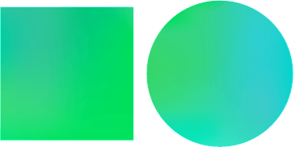
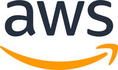

사업분야
디지털·AI 전환(DX & AX)을 중심으로 SI, 클라우드, BigData·AI, ITO까지 — 고객의 비즈니스 전 주기를 지원합니다.
DX & AX 사업
Digital Transformation으로 비즈니스 혁신을 가속화하고, AI Transformation으로 새로운 비즈니스 가치를 창출합니다.
DX 사업
AX 사업
SI 사업
최적화된 전담 인력을 통한 효과적인 사업 수행을 위해 사업 분석·수행·기술 개발·컨설팅 등 경쟁력 높은 조직 체계를 구축하고 있습니다. Creative Contents Group
웹 & 모바일 SW 개발
Web, CMS, 모바일 App·Web, Application, 표준 프레임워크 기반 개발.
컨텐츠 기획
유아 컨텐츠, 투어 컨텐츠, LMS 컨텐츠 등 Creative Contents.
빅데이터 포털 개발
빅데이터 분석·시각화 포털, IoT 연계 대시보드, 공공데이터 공유·활용 포털, 디지털 시장실 개발.
컨설팅 서비스
정보시스템·정보보호 컨설팅, Strategy·솔루션 컨설팅, IT 수준진단 및 Governance 컨설팅.
클라우드
클라우드(CX) 사업본부는 기업의 디지털 전환을 이끄는 클라우드 전문 조직입니다. 진단·컨설팅부터 구축, 마이그레이션, 운영·최적화까지 클라우드 전(全) 주기를 책임집니다.
고객의 비즈니스가 클라우드 위에서 더 빠르고 안전하게 성장하도록 돕습니다.
AI-네이티브 시대를 선도하는 대한민국 대표 클라우드 파트너로 도약합니다.
규제 대응·보안을 갖춘 안정적 운영
AI-네이티브 아키텍처로 지속 혁신
전 주기 클라우드 전문 역량 보유
서비스 & 솔루션 라인업
클라우드 도입부터 운영·최적화까지, 전 주기를 아우르는 서비스를 제공합니다.
클라우드 인프라 IAAS · PAAS · SAAS
퍼블릭·프라이빗·하이브리드 인프라를 설계하고 구축합니다.
클라우드 마이그레이션 MIGRATION
레거시 진단부터 무중단 전환까지 안전하게 이전합니다.
관리형 서비스 MSP
24/7 운영·모니터링·장애 대응으로 안정성을 보장합니다.
멀티클라우드 관리 CMP · FINOPS
통합 관제와 비용 거버넌스로 멀티클라우드를 최적화합니다.
핵심 역량 & 기술력
AI-네이티브 시대에 대응하는 차별화된 클라우드 전문 역량을 보유하고 있습니다.
- AI-Native & AIOps — AI 기반 운영 자동화와 예측형 관제로 장애를 사전에 방지합니다.
- 멀티·하이브리드 클라우드 — 워크로드 이식성을 갖춘 유연한 클라우드 아키텍처를 구현합니다.
- 보안 & 컴플라이언스 — 제로트러스트 보안과 국내외 규제 대응 체계를 제공합니다.
- FinOps 비용 최적화 — 데이터 기반으로 클라우드 비용을 투명하게 관리합니다.


BigData·AI
오픈소스 데이터 플랫폼 역량과 AI/RAG 기술을 융합하여, 공공·금융·민간 데이터의 수집·분석부터 AI 검색·업무 자동화까지 지원하는 '통합 데이터·AI 플랫폼'을 제공합니다.
빅데이터 플랫폼
오픈소스 기반 수집·저장·처리·분석. Hadoop·Spark·OLAP·포털·대시보드 중심.
AI/RAG 확장
문서·업무 데이터를 벡터화해 LLM 질의응답, AI Search, 요약·보고서 자동화로 확장.
Cloud / Hybrid
G-Cloud 및 민간 클라우드 환경을 고려한 인프라 설계·증설·운영관리 체계.
운영·모니터링
실시간 모니터링, 위험 알림, 메일 연동, 에코시스템 Web UI 제어.
ITO
정보시스템 위탁 운영 및 통합 유지관리로, 고객의 IT 자원을 대신 안정적으로 운영·관리합니다.